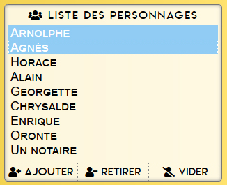
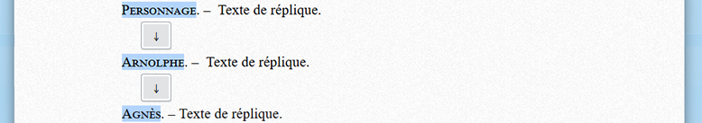

Chère autrice, cher auteur, bonjour !
Bienvenue dans la page d'aide.
Marre de pas pouvoir taper tes répliques à la vitesse de ton imagination ?
Cette application est faite pour toi !
Attention cependant, elle est en phase de test et fonctionne mieux sur Firefox et Chrome.
Comment ça marche ?
De deux manières :
- la Rapide (avec le menu à gauche)
- la SUPER RAPIDE (100% au clavier)
PRÉREQUIS (dans les deux cas)
Il faut entrer la liste de tous les personnages de la pièce dans le menu de gauche.
(s'il y en a qui se rajoutent au fur et à mesure plus tard, c'est pas grave, il n'est jamais trop tard)
C'est tout.
Le reste est optionnel et simple à comprendre.
TECHNIQUE n°1 : La Rapide
• Tu cliques sur un personnage dans le menu à gauche.
• Tu lui ajoutes éventuellement une didascalie fonctionnelle.
Exemple avec riant
:
Agnès, riant – Dès ce soir ?
• Tu tapes le texte de la réplique et tu cliques sur AJOUTER LE TEXTE
Et voilà !
TECHNIQUE n°2 : LA SUPER RAPIDE
Mêmes fonctionnalités sauf que tu n'utiliseras presque pas la souris.
D'abord tu te positionnes sur la page et tu fais ⇧ Shift + ↵ Entrée
Voici ce que ça donne :
Ensuite tu tapes le nom de ton personnage :
Puis tu fais TAB ( ↹ )
Puis tu tapes ta réplique
Puis tu recommences, sauf que là, tu veux ajouter une didascalie fonctionnelle.
Alors tu tapes le nom de ton personnage, puis un espace, et tu tapes la didascalie entre parenthèses.

En fermant la parenthèse, la didascalie se met automatique en page :
Encore PLUS RAPIDE
Imaginons que dans ta scène, deux personnages dialoguent (Agnès et Arnolphe).
Dans ce cas, tu les sélectionnes tous les deux dans le menu Liste des personnages
de gauche.
Laisse la touche Ctrl enfoncée pour en sélectionner plusieurs à la fois ou en déselectionner.

Tu reviens sur la page, et à nouveau, tu fais ⇧ Shift + ↵ Entrée
Sauf que maintenant, lorsque tu utiliseras les flèches haut ou bas ( ↑ ou ↓ ), les personnages que tu as sélectionné seront automatiquement proposés !

Tu n'as plus qu'à faire TAB ( ↹ ) pour taper ta réplique et continuer comme ça à l'infini !
Amuse-toi bien !
Et si tu repères un bug, écris-moi à a.mezurat@protonmail.com